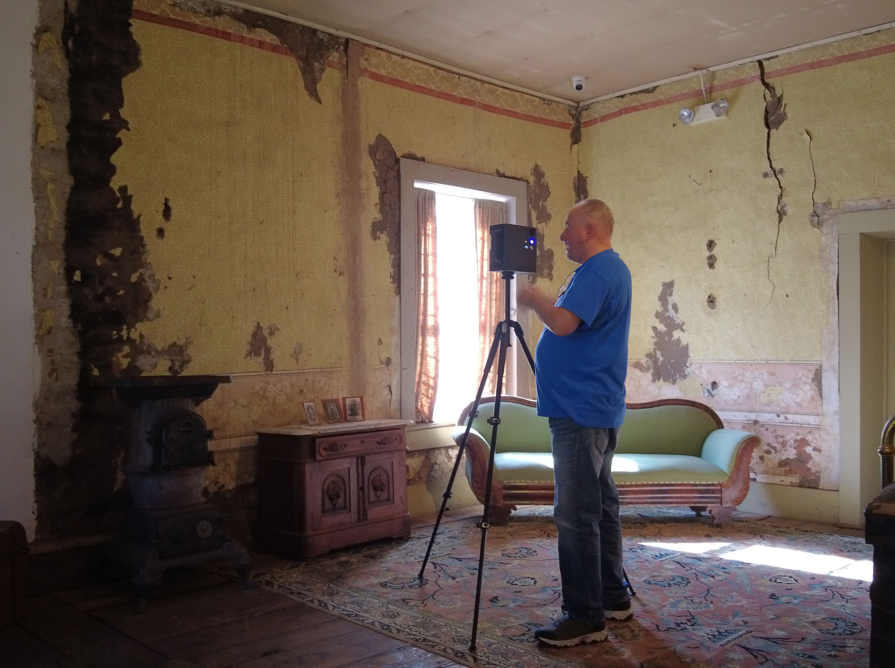

Lincoln
Lincoln Historic Site (Lincoln, New Mexico) is home to a long history of pre-contact Indigenous cultures, Colonial Spanish settlements, and was once the county seat during the Territorial Era. On the site are a cluster of structures that have remained intact and are open and accessible to the public as monuments or museums.
In 2024 the Cultural SITEs team returned to New Mexico Historic Sites to partner once again for a 3D scan and data collection of a select few monuments in Lincoln. This scan produced the largest variety of output in the SITEs project, including Matterport digital tours, panoramic interior scans, and 3D models for print. The Convento, Tunstall Store, and Courthouse were scanned with a Matterport camera, producing immersive virtual tours used today for distance learning educational programs. El Torreón, a Spanish defensive tower, was photogrammetrically scanned and rendered as a Gaussian Splat model, then printed for an interactive traveling exhibition on the New Mexico Department of Cultural Affairs' Wonders on Wheels Bus.
For more information, visit
New Mexico Historic Sites – Lincoln Historic Site
LINCOLN, NEW MEXICO—Lincoln Historic Site is home to a long history of Pre-Contact Indigenous cultures, Colonial Spanish settlements, and was once the county seat in the Territorial Era. On the site are a cluster of structures that have remained intact and are open to the public as monuments or museums.
In September 2024 Lincoln was the third project location for Cultural SITEs. By that time, SITEs had experimented with standard photogrammetric data captures as well as LiDAR, building up a wide-ranging set of methods and solutions for different historic centers. Lincoln was the most complex site that the team scanned as it had 17 structures that represented different architectural styles and historic periods. It is also one of the most visited New Mexico Historic Sites locations by tourists and yet it remains relatively inaccessible to many schools in the state as it can be cost prohibitive to charter buses there for field trips.
The management and programming teams at Lincoln were interested in using the digital output of the scans to help increase educational access and create distance learning programs while also updating exhibits with enhanced digital experiences for visitors to the site. Together the site manager and the SITEs team decided to collect data with photogrammetry and panoramic imaging to prioritize immersive digital tours and 3D models as the main output for Lincoln.


>
Altogether five structures were documented: the Tunstall Store, Courthouse, Convento, San Juan Bautista Church, and the Torreón. Exterior and interior photogrammetric scans were taken of the Tunstall Store, Courthouse, and Convento using a Sony DSLR camera, DJI Mavic Pro, and Matterport. These three structures are all accessible to the public with artifacts on display; the Matterport interior scans captured all of these artifacts and their accompanying interpretations in high resolution. These scans were used to create immersive digital visitor experiences, and the goals for increased public access and distance learning programs were met.
While these digital models proved to be highly useful in their application, the team realized early on that the main limitation of using Matterport is the proprietary nature of the software. Once rendered, the immersive models are stored on Matterport-owned servers and can only be viewed on Matterport-hosted websites. Should an account owner want to export their models, an additional package must be purchased from Matterport. The SITEs team did not investigate this option, so any benefits or disadvantages regarding the applicability of these exports are unknown at this time.
The San Juan Bautista Church is a historic structure that has been accessible to visitors in the past but does not offer any kind of exhibit or interpretation. The objective for this scan was to collect interior panoramic images of the church for documentation with the potential to create an interior model from these photos. Currently, the images have not been stitched together into a model but are stored by New Mexico Historic Sites and the UNM HPR Digital Repository.
The Spanish Torreón is a circular defensive structure that was built by the Spanish in the mid-19th century. It is believed to be one of the only, if not the only, intact torreónes in the state of New Mexico. The team prioritized scanning the Torreón because of its historical significance and because New Mexico Historic Sites would later plaster over the original masonry for preservation purposes. The 3D model became a document of the monument prior to plastering and an important record of the ongoing preservation process at Lincoln.
The Torreón model was also a significant step in the data collection process for Cultural SITEs because it was the first time the team rendered it as a Gaussian Splat. Gaussian Splats are a new innovation in the field of digital reconstruction that differ from traditional photogrammetric 3D models in how they are rendered and in their highly photorealistic results. The Torreón 3D model was rendered in several parts so that it could be taken apart to reveal a cross-section showing the interior. A printed model of the Torreón was provided to the New Mexico Department of Cultural Affairs' Wonders on Wheels Bus, a traveling exhibit serving schools in rural and remote communities. The team at Lincoln Historic Site has also produced its own printed model of the Torreón for interactive exhibits and educational experiences on site.
{kind=link}
{kind=link}
{kind=link}
{kind=link}
{kind=link}